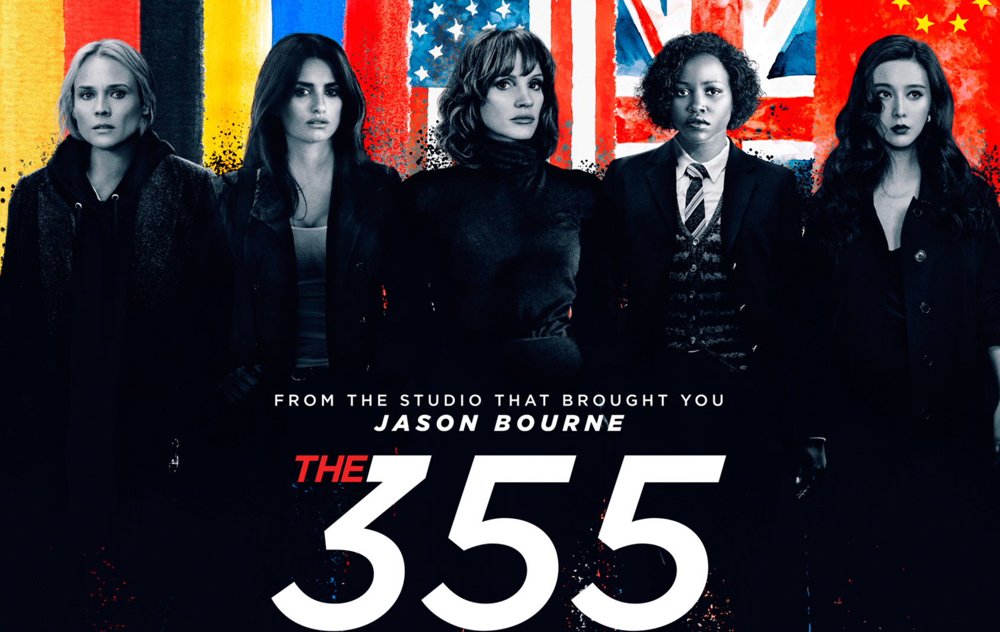

Эйч — загадочный и холодный на вид джентльмен, но внутри него пылает жажда мести. Преследуя свои мотивы, он внедряется в инкассаторскую компанию, чтобы выйти на соучастников серии многомиллионных ограблений, потрясших Лос-Анджелес. В этой запутанной игре у каждого своя роль, но под подозрением оказываются все. Виновных же обязательно постигнет гнев человеческий.
Наследник знаменитого дома Атрейдесов Пол отправляется вместе с семьей на одну из самых опасных планет во Вселенной — Арракис. Здесь нет ничего, кроме песка, палящего солнца, гигантских чудовищ и основной причины межгалактических конфликтов — невероятно ценного ресурса, который называется меланж. В результате захвата власти Пол вынужден бежать и скрываться, и это становится началом его эпического путешествия. Враждебный мир Арракиса приготовил для него множество тяжелых испытаний, но только тот, кто готов взглянуть в глаза своему страху, достоин стать избранным.
Декабрь 2020 года. Бывший сотрудник полиции Гриша Дмитриев в составе небольшой группы российских инструкторов прибывает в Центральноафриканскую Республику. Грише командировка не кажется сложной, ведь в задачи инструкторов входит только обучение солдат местной армии основам тактики и методам ведения боя. Однако все с самого начала идет не так. Несколько бандитских группировок идут на столицу, чтобы устроить в стране государственный переворот. Русские инструкторы совместно со своими подопечными дают отпор бандитам. Но для Гриши, никогда не принимавшего участие в военных действиях, эта командировка превращается в настоящий ад.
Джеймс Бонд оставил оперативную службу и наслаждается спокойной жизнью на Ямайке. Все меняется, когда на острове появляется его старый друг Феликс Лейтер из ЦРУ с просьбой о помощи. Миссия по спасению похищенного ученого оказывается опаснее, чем предполагалось изначально. Бонд попадает в ловушку таинственного злодея, вооруженного опасным биологическим оружием.
Дэниэл Рэдклифф, Руперт Гринт и Эмма Уотсон встретятся со своими коллегами и впервые за долгие годы окажутся в стенах Хогвартса.
По неизвестной причине Луна вдруг сходит с орбиты и идёт на столкновение с Землёй, что провоцирует множественные катаклизмы.
Законный наследник престола в изгнании и сын убитого мятежника — что между ними общего? У каждого своя цель: один мечтает занять трон и вернуть семье былую славу, другой — отомстить убийце отца, который служит узурпаторам. Юноши вступают в масштабную борьбу за власть и честь, в которой те, кто казались друзьями, могут предать, а былые враги превратиться в союзников. Ради достижения цели и принцу, и сыну бунтовщика придется рискнуть самым ценным и сделать главный выбор в своей жизни — пойти предначертанным путем или выступить против самой судьбы.
Когда сверхсекретная технология попадает в руки опасных наемников, непредсказуемая агент ЦРУ Мейс вынуждена объединиться с соперницами — крутым немецким агентом Мари, бывшей союзницей из МИ-6, передовым IT-спецом Хадижей и опытным колумбийским психологом Грасиелой — для выполнения смертельно опасной миссии. Пять женщин-спецагентов поставят под удар собственную преданность национальным интересам, что поможет им спасти мир или приведет их к гибели.